어디에서 열고,
무엇에 닿고, 누가 승인하는가.
오늘 쓰는 Claude의 자리(데스크톱 앱·Office·Cowork)와 연결(파일·폴더·커넥터·MCP·스킬·플러그인)을 한 장에 정리했습니다. 수업 단원이 아니라 막힐 때 펴 보는 지도입니다.
같은 Claude, 여섯 개의 자리
오늘 수업에서 "Claude를 연다"는 말은 자리마다 뜻이 다릅니다. 어디서 열었는지에 따라 무엇을 볼 수 있고 무엇을 바꿀 수 있는지가 달라집니다.
| 자리 | 어떻게 여나 | 잘하는 일 | 오늘 수업에서 | 필요한 것 |
|---|---|---|---|---|
| 데스크톱 앱 | 설치한 앱 실행 | 웹의 기능 전부 + Cowork(폴더·컴퓨터 작업) + 확장 프로그램(내 PC에서 도는 연결) | 00~08 전 단원의 기본 자리 | Windows 10 이상. 채팅은 무료 플랜도 됨, Cowork는 유료 플랜 |
| Claude 웹 (claude.ai) | 브라우저 | 채팅·파일 첨부·프로젝트·아티팩트·커넥터 | 앱이 안 되면 01·06·07 단원을 여기서 해도 됩니다 | 계정 로그인 |
| Office 추가 기능 Claude for Microsoft 365 — Excel·PowerPoint·Word·Outlook | 각 앱의 홈 탭 → Claude 버튼 | 열려 있는 파일 안에서 읽고 고치기. 셀·슬라이드·문단을 집어서 인용 | 02 · 03 · 04 | Microsoft 365 + AppSource에서 추가 기능 설치 + Claude 로그인(Pro 이상) |
| Cowork 데스크톱 앱 안의 작업 모드 | 입력창의 채팅 | Cowork 전환 | 폴더 연결, 여러 단계 작업, 파일 정리·생성, Chrome과 함께 웹 작업 | 05 | 데스크톱 앱 + 유료 플랜 |
| Claude in Chrome | Chrome 확장 | 웹사이트를 대신 조작 | 오늘 쓰지 않음 | 확장 설치 + 권한 설정 |
| 모바일 앱 · Claude Code | — | 이동 중 채팅 / 개발자용 터미널 | 오늘 쓰지 않음 | — |
확인 상태: 데스크톱 앱·Office 추가 기능 3종·Cowork는 2026-09-15·16 개인 Pro 계정에서 실제로 실행했습니다. Chrome·모바일·Claude Code는 문서 확인만 했습니다.
데스크톱 앱, 여덟 군데만 알면 됩니다
아래는 2026-09-16에 찍은 실제 앱 화면입니다. 다른 대화 제목과 계정 이름은 가렸습니다. 한국어 설정 기준이며 영어 화면은 괄호 안 이름으로 보입니다.
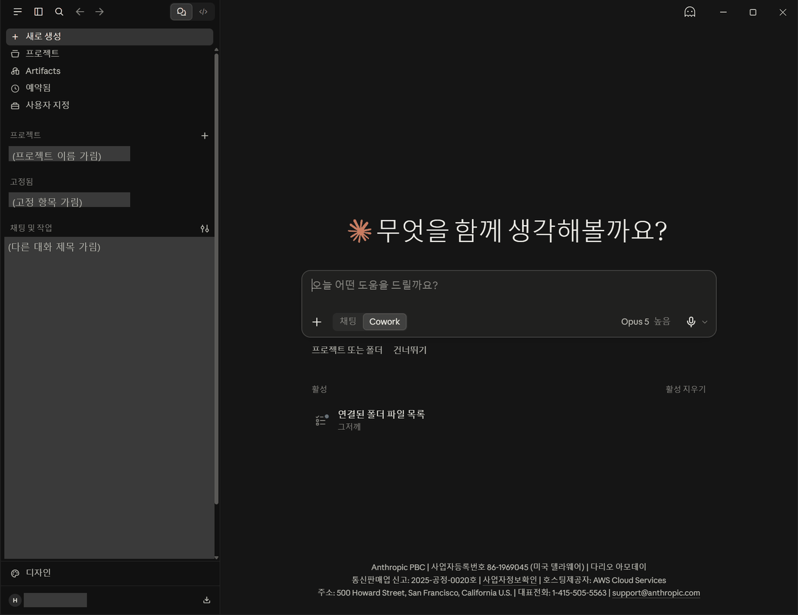
| 어디 | 이름 (영어 화면) | 무엇을 하나 | 오늘 수업에서 |
|---|---|---|---|
| 사이드바 ① | 새로 생성 (New chat) | 새 대화를 엽니다. 업무마다 새 대화가 오늘의 규칙입니다 | 모든 단원 |
| 사이드바 ② | 프로젝트 (Projects) | 자료·지침을 묶어 두고 여러 대화에서 같은 기준으로 씁니다 | 오늘은 쓰지 않음 |
| 사이드바 ③ | Artifacts | 대화에서 만든 문서·웹페이지·그림 모음 | 오늘은 쓰지 않음 |
| 사이드바 ④ | 예약됨 (Scheduled) | 정해진 시간에 반복 실행하는 Cowork 작업 | 오늘은 쓰지 않음 |
| 사이드바 ⑤ | 사용자 지정 (Customize) | 스킬 · 커넥터 · 플러그인을 등록하고 켜고 끄는 곳 | 01 · 05 · 06 · 07 (스킬 등록) |
| 사이드바 ⑥ | 채팅 및 작업 | 지금까지의 대화 목록. 파란 점은 진행 중인 Cowork 작업 | 이전 대화가 섞이지 않았는지 볼 때 |
| 입력창 ⑦ | + 버튼 | 파일 첨부 · 스킬 · 커넥터 · 플러그인 (아래 그림) | 00~07 |
| 입력창 ⑧ | 채팅 | Cowork · 모델 선택 · 마이크 | 작업 모드 전환, 모델과 생각 깊이, 음성 입력 | 05에서 Cowork로 전환 |
| 왼쪽 아래 | 계정 메뉴 → 설정 (Ctrl+,) | 설정·언어·도움·로그아웃 | 03절 참고 |
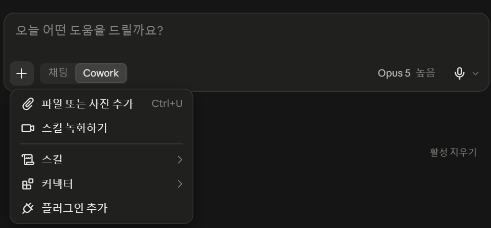
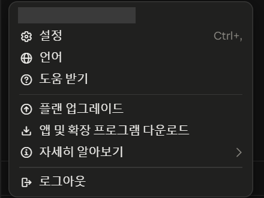
설치·로그인·업데이트 — 공식 문서 기준
| 항목 | 공식 문서 (2026-09-16 확인) | 수업에서 |
|---|---|---|
| 내려받기 | claude.ai/download 에서 운영체제에 맞는 파일 | 수업 PC에 이미 설치되어 있으면 건너뜁니다 |
| 요구 사항 | Windows 10 이상 · macOS 11 이상 | — |
| 플랜 | 채팅은 모든 플랜. Cowork·Claude Code는 유료 플랜(Pro·Max·Team·Enterprise) | 05 단원(Cowork)은 계정 플랜을 먼저 확인 |
| 업데이트 | Windows·macOS는 앱 안에서 자동 | 수업 전 강사가 버전을 맞춥니다 |
| 언어 | 계정 메뉴 → 언어 | 영어로 보이면 메뉴 위치가 같은지 보고 진행 |
Claude Desktop 설치 안내 ↗ · 조직에서 관리자가 배포하는 방식은 별도 문서이며 학생 본문에서는 다루지 않습니다.
설정(Ctrl+,)에서 알아 둘 여섯 곳
설정은 바꾸는 곳이 아니라 확인하는 곳으로 씁니다. 수업 중에 아래 항목을 바꾸지 마세요. 어디에 무엇이 있는지만 알아 둡니다.
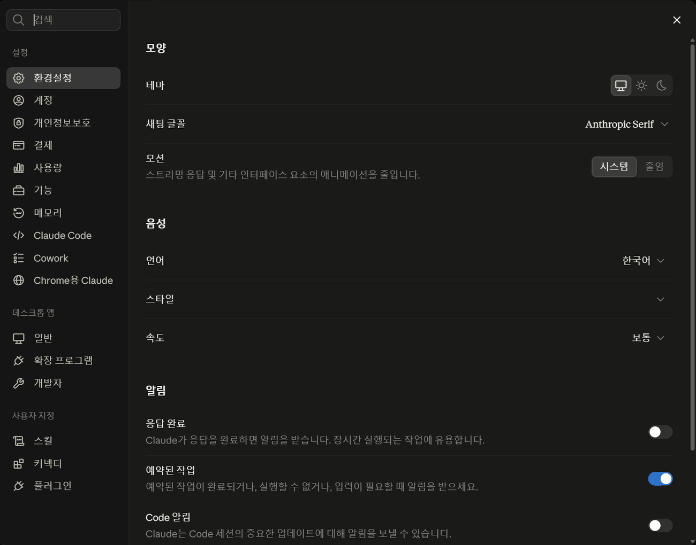
| 설정 항목 | 무엇이 있나 | 왜 알아 두나 |
|---|---|---|
| 환경설정 | 테마·채팅 글꼴·음성 언어·알림 | 화면이 다르게 보일 때 첫 번째로 볼 곳 |
| 기능 | 도구 액세스 모드(기본: 필요할 때 도구 로드) · 커넥터 검색 · Artifacts · 클라우드 코드 실행 및 파일 생성 | 마지막 항목 아래에 "스킬 사용에 필요합니다"라고 적혀 있습니다. 01 단원에서 스킬 메뉴가 없을 때 확인할 곳 |
| Cowork | 신뢰할 수 있는 Cowork 폴더(묻지 않고 쓰는 폴더) · 이 컴퓨터에서만 · 기본 브라우저 · 허용된 사이트 · Cowork 파일 저장 위치 | 05 단원에서 "왜 폴더 접근을 물어보나"의 답이 여기 있습니다. 신뢰 폴더에 넣으면 그때부터 묻지 않습니다 |
| 확장 프로그램 | 내 PC에서 실행되는 연결(.MCPB/.DXT). 설치된 것이 없으면 "설치된 확장 프로그램 없음" | 05절 커넥터 네 종류 중 ③. 수업에서는 설치하지 않습니다 |
| 개발자 | 로컬 MCP 서버 — 구성 편집(설정 파일) | 개발자용. 화면만 알아 둡니다 |
| 사용자 지정 | 스킬 · 커넥터 · 플러그인 | 사이드바의 "사용자 지정"과 같은 곳 |
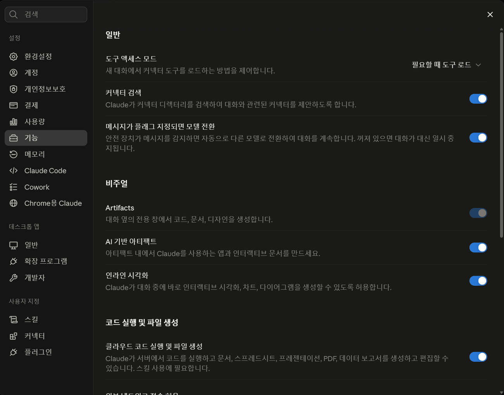
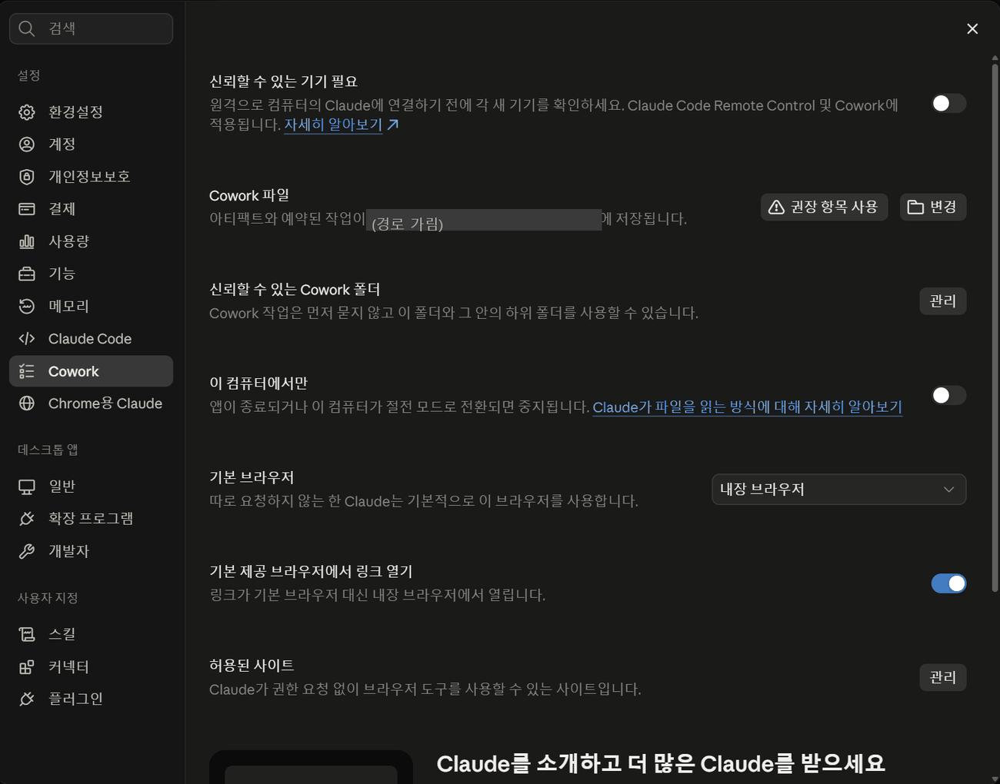
"연결했다"는 말 다섯 가지 — 같은 줄에 세우면 안 됩니다
교재에 "첨부", "폴더 연결", "커넥터", "스킬", "추가 기능"이 다 나옵니다. 위에서 아래로 권한이 커지는 한 줄의 단계가 아닙니다. 서로 다른 축에 있는 것이라, 네 가지 질문으로 나눠 봐야 헷갈리지 않습니다: 작업 방법을 주나 · 어떤 자료에 닿나 · 무엇을 실행할 수 있나 · 승인은 어디서 하나.
| 기능 | 작업 방법을 주나 | 어떤 자료에 닿나 | 무엇을 실행할 수 있나 | 승인은 어디서 | 끝내기 · 되돌리기 | 오늘 단원 |
|---|---|---|---|---|---|---|
| 파일 첨부 | 아니오 | 올린 파일만. 내 PC의 다른 파일은 보지 않음 | 읽기·분석·채팅 답변(파일 생성 기능이 켜져 있으면 새 파일 만들기) | 첨부하는 순간 내가 고른 파일이 곧 범위 | 첨부한 파일은 그 대화에 남습니다. 대화를 지우면 같이 지워집니다. 권한을 준 것이 아니므로 "회수"할 것은 없습니다 | 00 · 01 · 06 · 07 |
| 폴더 연결 (Cowork) | 아니오 | 연결한 폴더와 그 아래 전부 | 파일을 읽고·옮기고·이름 바꾸고·만들기 | 폴더 접근 허용 창(세션마다) · 실행 전 계획 승인 | 연결 해제. 이미 바뀐 파일은 되돌려지지 않으므로 사본에서만 | 05 |
| 커넥터 | 아니오 | 그 서비스에서 승인한 권한 범위의 자료 | 서비스가 제공하는 동작(검색·읽기, 서비스에 따라 만들기·보내기) | 서비스 권한 승인 화면(연결할 때) · 대화에서 켜기 | 사용자 지정 → 커넥터 → 내 항목 → 연결 해제 · 서비스 쪽에서 권한 회수 | 오늘 쓰지 않음 — 화면만 |
| 스킬 · 플러그인 | 예 — 스킬은 지침, 플러그인은 지침 + 커넥터 묶음 | 스킬 자체는 자료에 닿지 않음. 자료는 첨부·폴더·커넥터로 따로 줍니다 | 스킬: 없음(방법만). 일반 스킬은 코드(scripts)를 포함할 수 있고 그때는 코드 실행 기능이 필요. 플러그인: 포함된 커넥터만큼 | 등록 시 보안 검사 · 켜기 스위치. 스킬을 켠다고 파일·서비스 접근 권한이 생기지는 않습니다 | 끄기 · 삭제 | 01 · 05 · 06 · 07 |
| Office 추가 기능 | 아니오(스킬은 여기서도 켜짐) | 열려 있는 문서(+ 다른 Office 앱에 열린 파일) | 문서를 읽고 고치기 | 수정 전 확인 창(Ask before edits) | Ctrl+Z · 변경 내용 추적 · 작업 사본 | 02 · 03 · 04 |
scripts/(코드)와 assets/(자료)도 넣을 수 있고, 그런 스킬을 켜려면 설정의 "코드 실행 및 파일 생성"이 켜져 있어야 합니다. 어느 쪽이든 스킬 설치가 곧 실행 권한 부여는 아닙니다.MCP는 규격이고, 커넥터는 그 규격으로 만든 연결입니다
두 말이 같이 나와서 헷갈립니다. 한 문장으로 정리하면: MCP는 "연결하는 방법의 공통 규격"이고, 커넥터는 "그 규격으로 만들어 Claude에 꽂는 연결"입니다.
| 말 | 쉽게 말하면 | 비유 | 내가 만질 일이 있나 |
|---|---|---|---|
| MCP Model Context Protocol | AI 앱과 외부 도구·자료가 대화하는 공개 규격. Anthropic이 만들어 공개했고 다른 회사 제품도 씁니다 | 전기 콘센트 규격. 어느 회사 제품이든 같은 모양의 플러그면 꽂힙니다 | 없습니다. 개발자가 이 규격으로 서버를 만듭니다 |
| MCP 서버 | MCP 규격으로 만든 프로그램. 인터넷에 있으면 원격, 내 PC에 있으면 로컬 | 플러그가 달린 전자제품 | 없습니다. 개발자·서비스 회사가 운영 |
| 커넥터 | Claude 화면에서 보이는 연결 항목. 안쪽은 MCP 서버입니다 | 벽에 꽂힌 상태의 제품 이름표 | 있습니다. 연결·해제·켜고 끄기 |
| 플러그인 | 커넥터 + 스킬 + 명령을 한 묶음으로 설치하는 것 | 멀티탭에 제품과 사용설명서까지 묶어 파는 세트 | 설치·삭제 |
공식 문서의 표현을 그대로 옮기면 — 커넥터는 "MCP로 구동되며", 디렉터리에 있는 커넥터와 내가 직접 추가한 커넥터는 "같은 MCP 기반에서 동작하고, 다른 것은 검토·검색·배포 방식"입니다. (커넥터 개요 ↗ · 디렉터리 vs 커스텀 ↗)
커넥터의 네 가지 층 — 어디서 추가하고 누가 검토했나
| 종류 | 어디서 추가 | 무엇이 필요 | 누가 검토했나 | 어디서 실행 | 오늘 |
|---|---|---|---|---|---|
| ① 디렉터리 커넥터 Google Drive · Gmail · Calendar · Microsoft 365 · Slack · GitHub · Notion … | 사용자 지정 → 커넥터 → 탐색 → 카드의 + 또는 연결 | 그 서비스 계정 로그인과 권한 승인 | 검증됨(체크 표시) 또는 커뮤니티 라벨 | 서비스 회사의 서버(원격) | 화면만 |
| ② 커스텀 커넥터 | 사용자 지정 → 커넥터 → 추가 → 이름 + MCP 서버 URL | 개발자에게 받은 HTTPS 주소 | 아무도. "Custom"으로 표시 | 그 주소의 서버(원격) | 화면만 — 등록하지 않음 |
| ③ 확장 프로그램 Desktop Extensions · .MCPB/.DXT | 설정 → 확장 프로그램 → 찾아보기 또는 파일 드래그 | 데스크톱 앱 | 갤러리에 있는 것은 목록화됨. 직접 받은 파일은 검토 없음 | 내 PC(로컬) | 설치하지 않음 |
| ④ 로컬 MCP 서버 | 설정 → 개발자 → 구성 편집 | 개발 지식 | 아무도 | 내 PC(로컬) | 개발자용 — 화면만 |
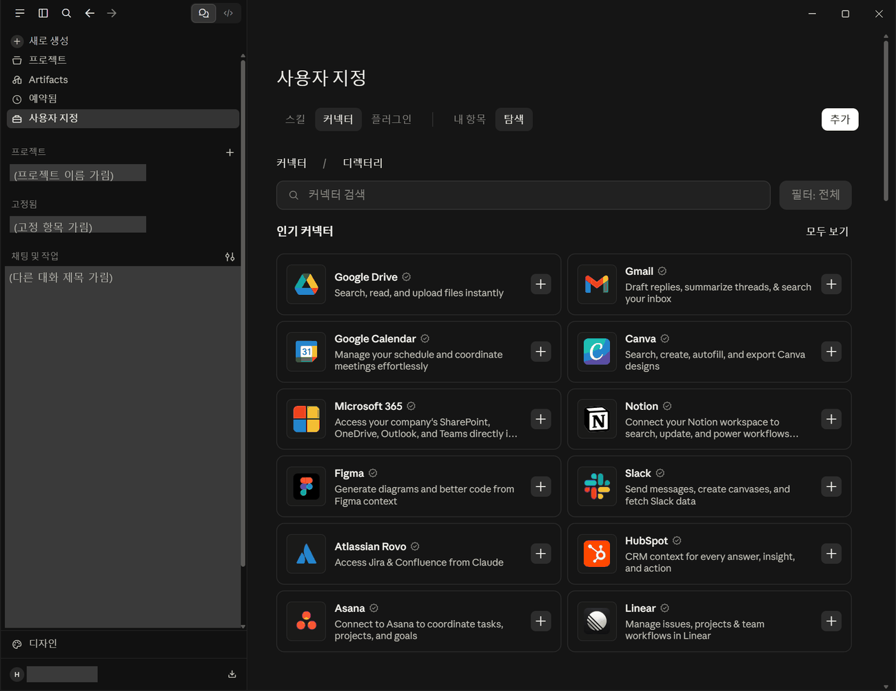
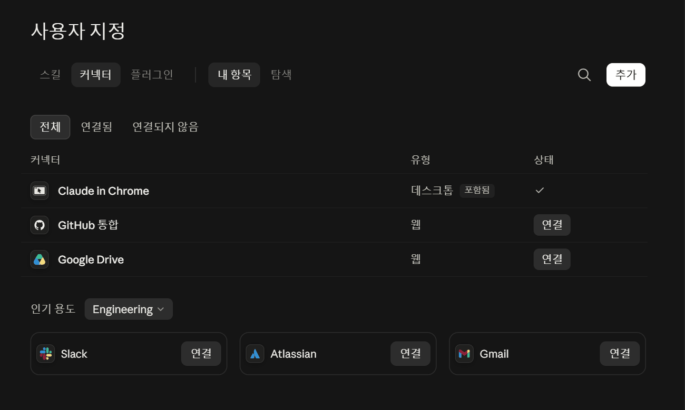
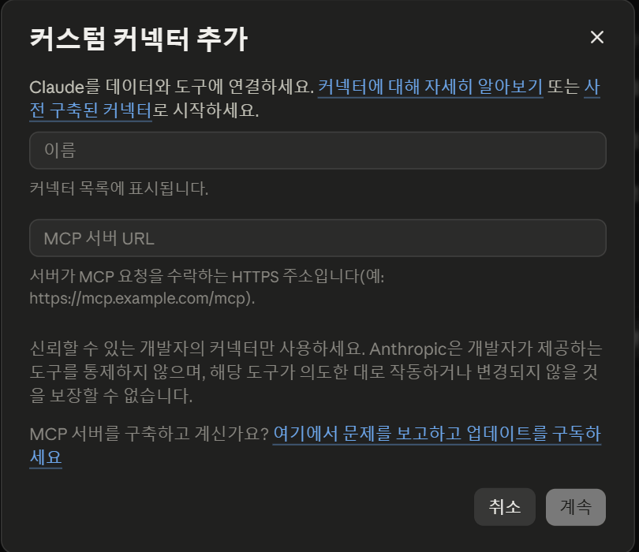
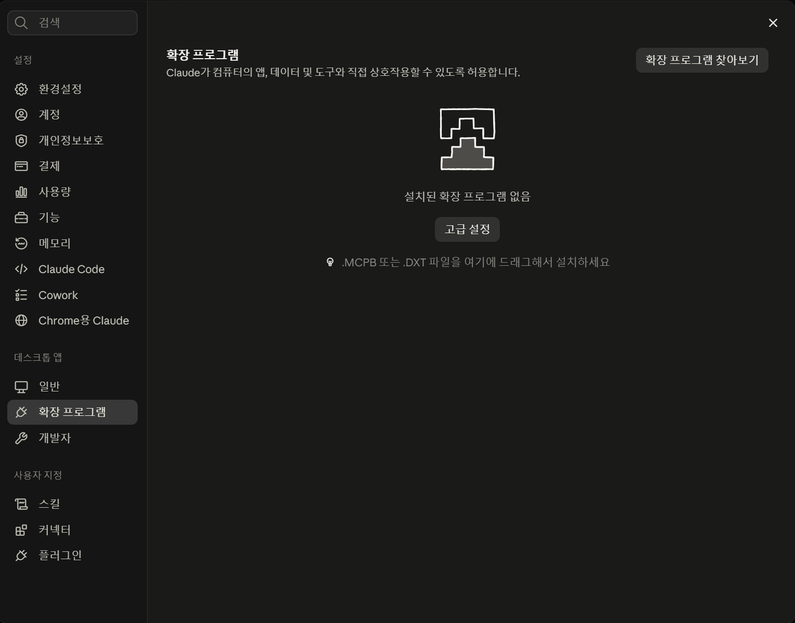
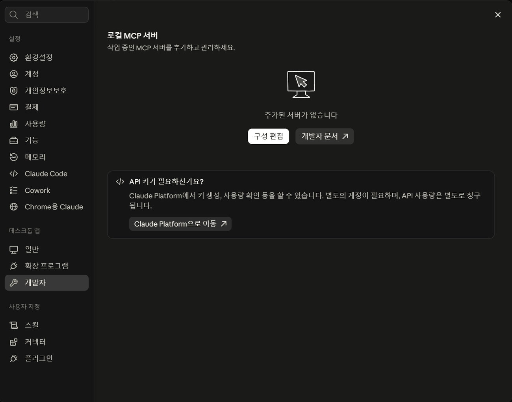
라벨의 뜻 — 검증됨 · 커뮤니티 · 커스텀
| 라벨 | 공식 문서의 뜻 | 그래서 |
|---|---|---|
| 검증됨 ✓ | Anthropic이 도구를 검토해 정책 요건을 충족한 것. 보안 감사나 성능 보증은 아님 | 가장 먼저 고려하되, 권한 화면은 그래도 읽습니다 |
| 커뮤니티 | 제3자가 만들었고 Anthropic이 선별만 했으며 깊이 검토하지 않음. 연결 전 안내가 뜸 | 만든 곳을 신뢰할 수 있을 때만 |
| 커스텀 | 내가 직접 추가한 것. Anthropic 검토 없음 | 기관에서는 관리자가 정한 것만 |
커넥터는 전부 같은 여섯 단계로 연결합니다
서비스가 달라도 절차는 같습니다. 오늘 수업에서는 연결하지 않고 절차만 읽습니다. 업무 자료가 있는 서비스는 기관 규정과 관리자 승인이 먼저입니다.
사용자 지정 → 커넥터 → 탐색에서 서비스를 고릅니다
사이드바 사용자 지정 → 커넥터 탭 → 탐색. 카드의 + 또는 상세 화면의 연결을 누릅니다. 커뮤니티 라벨이면 "깊이 검토되지 않았다"는 안내가 먼저 뜹니다.
그 서비스에 로그인합니다
Claude가 아니라 그 서비스(Google, Microsoft, Slack…)의 로그인 화면입니다. 비밀번호는 그 서비스에만 입력합니다. 이 방식(OAuth)은 Claude에 비밀번호를 주지 않고 권한만 넘깁니다.
권한 화면을 읽고 승인합니다 — 여기가 판단 지점
"읽기"만인지 "만들기·보내기·삭제"까지인지 여기서 정해집니다. 공식 문서: "Claude는 부여된 권한에 따라 데이터를 읽고, 만들고, 수정하고, 삭제할 수 있습니다."
Claude로 돌아와 내 항목에서 확인합니다
사용자 지정 → 커넥터 → 내 항목에 그 커넥터가 상태 ✓로 보이면 연결된 것입니다. 유형이 웹인지 데스크톱인지도 같이 봅니다.
대화에서 켜고, 필요할 때만 씁니다
입력창 + → 커넥터 › → 스위치로 켭니다. 설정 → 기능의 "도구 액세스 모드"가 기본값(필요할 때 도구 로드)이면 대화 내용에 맞는 도구만 불러옵니다. Office 패널에서도 + → Connectors로 같은 목록이 보입니다.
연결 해제 — 안 쓰면 끊습니다
사용자 지정 → 커넥터 → 내 항목 → 해당 커넥터의 관리(…)에서 연결 해제. 그 서비스 쪽 보안 설정에서 "연결된 앱"을 지워도 됩니다. 만료되어 안 되면 같은 자리에서 다시 연결.
절차 출처: 커넥터 시작하기 ↗ · 커스텀 커넥터 ↗. 2026-09-16 데스크톱 앱(한국어)에서 1·4·5단계의 화면을 실제로 확인했습니다. 2·3단계(서비스 로그인·권한 승인)는 수업 계정으로 실행하지 않았습니다.
서비스별로 다른 점 — 공식 문서가 적어 둔 것
| 커넥터 | 무엇에 닿나 | 필요한 계정 | 문서에 적힌 제한·주의 | 업무에서 쓸 때 |
|---|---|---|---|---|
| Google Drive | 문서 검색·읽기·올리기. 프로젝트에 넣은 문서는 자동으로 갱신 | Google 계정 | 문서 분석·조사에 적합 | 공유 범위가 넓은 드라이브는 연결 전에 폴더 권한부터 정리 |
| Gmail | 메일 검색·요약·답장 초안 | Google 계정 | "이메일을 검색할 수 있지만 보낼 수는 없다"(시작 안내) | 발송·삭제는 항상 사람이. 조직 설정에 따라 범위가 다를 수 있음 |
| Google Calendar | 일정 조회·조정 | Google 계정 | 일정 맥락 찾기에 적합 | 일정 변경은 결과를 캘린더에서 직접 확인 |
| Microsoft 365 | SharePoint · OneDrive · Outlook · Teams 검색 | 직장·학교 Microsoft 계정 | 개인 계정은 안 됨. 조직 설정 필요 | 기관 테넌트 정책이 우선. 관리자 승인 없이 연결하지 않기 |
| Slack | 채널·DM 검색, 메시지 작성 | Slack 워크스페이스 | 먼저 워크스페이스에 Claude in Slack 앱 설치가 필요 | 워크스페이스 관리자와 상의 |
| GitHub | 저장소·파일 읽기 | GitHub 계정 | 코드 이해·문서화에 적합 | 오늘 수업과 무관 |
| Notion · Canva · Figma · Asana · HubSpot … | 각 서비스의 자료와 동작 | 각 서비스 계정 | 검증됨 / 커뮤니티 라벨을 먼저 확인 | 만든 곳·권한 범위·자료가 어디로 가는지 확인 뒤 최소 범위로 |
| 커스텀(MCP 서버 URL) | 그 서버가 제공하는 도구 | 개발자가 준 주소 | Anthropic 검토 없음. Free 플랜은 1개 제한 | 기관에서는 관리자가 등록한 것만 |
위 표의 "닿는 것·제한"은 2026-09-16 공식 문서 기준이며, 서비스 회사가 도구를 바꾸면 달라질 수 있습니다. 실제 계정에서 각 서비스를 연결해 보지는 않았습니다.
Excel·PowerPoint·Word 안의 Claude — 같은 패널, 같은 규칙
02·03·04 단원의 A안이 이것입니다. 2026-09-16 리허설에서 세 앱 모두 실제로 실행했고, 아래 화면은 그때 찍은 것입니다. 사용자 이름과 계정 아이콘은 가렸습니다.
설치와 로그인 — 공식 문서 기준
| 항목 | 공식 문서 (2026-09-16 확인) |
|---|---|
| 이름 | Claude for Microsoft 365 하나로 Excel·PowerPoint·Word·Outlook에 들어갑니다 |
| 설치 (개인) | Microsoft AppSource의 "Claude for Microsoft 365" → 받기 → 앱을 열고 홈 → 추가 기능에서 활성화 → Claude 계정으로 로그인 |
| 설치 (조직) | 관리자가 Microsoft 365 관리 센터 → 통합 앱에서 배포. 사용자는 홈 → 추가 기능에서 켭니다 |
| 플랜 | Pro · Max · Team · Enterprise |
| 되는 버전 | Excel/Word/PowerPoint 웹, Windows Microsoft 365(Excel은 빌드 16.0.13127.20296 이상), Mac 16.46 이상 |
| 안 되는 버전 | Office 2016·2019 영구 라이선스 · iPad · Android |
| 제한 | Excel: 데이터 표·매크로(VBA) 미지원. "최종 산출물은 사람 검토 없이 쓰지 말 것" |
패널 화면 읽기

| 패널의 자리 | 무엇인가 | 수업에서 |
|---|---|---|
| 위쪽 칩 (문서 아이콘 + 숫자) | 지금 Claude가 볼 수 있는 열린 문서 | 숫자가 여러 개면 다른 파일의 내용이 섞일 수 있음. 실습 파일만 열어 둡니다 |
| "F9 selected" 같은 칩 | 내가 선택한 셀·슬라이드·문단이 요청에 함께 들어감 | 요청 전에 대상 셀을 클릭해 두면 정확해집니다 |
| / 로 시작하는 스킬 제안 | 이 앱에서 쓸 수 있는 스킬 (Excel: /audit-xls 등, Word: /check-doc 등) | 01 단원에서 등록한 내 스킬도 여기 나타납니다 |
| + 메뉴 | 파일 첨부 · 웹 검색 · 커넥터 · 플러그인 · 스킬 | 03 단원: 원본내용.md 첨부 / 04 단원: 새_회의록.md 첨부 |
| 손 모양 버튼 | 권한 모드 — Ask before edits(수정 전 확인) / Accept all edits(모두 수락) | 항상 손 모양(확인)인지 봅니다. 아래 설명 |
| 시계 · Opus 5 · 마이크 | 이전 대화 · 모델 선택 · 음성 입력 | — |
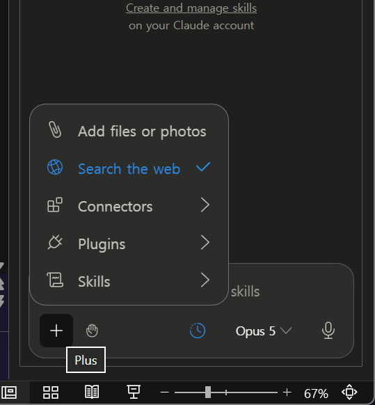
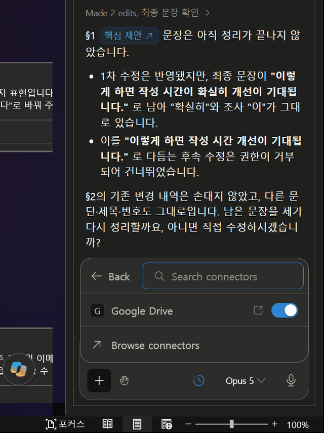
권한 모드와 확인 창 — 오늘 가장 중요한 두 화면


2026-09-16 리허설에서 실제로 확인한 것
| 앱 | 시킨 것 (교재 문장 그대로) | 실제로 된 것 | 확인한 방법 | 교재 위치 |
|---|---|---|---|---|
| Excel | E9만 7.5 → 6.0, 수식은 그대로 | E9=6 · F9=12 · G9=66.7% · F13=144. F9 수식 =D9-E9 유지. 응답에 셀 링크(지표 F9 ↗) 표시 | F9 클릭 → 수식 입력줄 · 파일 값 자동 검사 | 02 단원 04단계 |
| Excel | 표를 기준으로 연간 절감 금액은? | "금액은 알려드릴 수 없습니다 — 이 표에는 시간당 인건비 항목이 없습니다." F13=144시간까지만 제시 | 응답 읽기 | 02 단원 05단계 |
| PowerPoint | 템플릿 3장에 원본내용.md 채우기 | 3장 유지 · 레이아웃 3종 유지 · 표 4×3 · 마스터 띠와 고지 문구 유지 · 테마 글꼴 맑은 고딕 · 슬라이드마다 확인 창. 2장 세 번째 문장을 스스로 조금 줄여 넣음(넘침 방지 이유) | 여러 슬라이드 보기 · 파일 구조 자동 검사 | 03 단원 04단계 |
| PowerPoint | 2장 세 번째 문장만 한 줄로 | 확인 창에 찾을 문장 → 바꿀 문장이 그대로 표시됨. 승인 후 그 문장만 변경, 20pt 유지, 1·3장 불변 | 파일 값 자동 검사 | 03 단원 05단계 |
| Word | §1 한 문장을 추적 켠 채로 수정 | 삭제 "이 확실히" + 삽입 "이 기대"로 변경 내역에 기록. §2 기존 내역 3건 그대로. 이어서 시키지 않은 추가 수정을 제안 → Deny | 검토 창 · 파일의 변경 내역 자동 검사 | 04 단원 04단계 |
| Word | 의견 3 거절, 근거 정리, 처리 결과 표 추가 | 의견 3 스레드에 거절 답글 · 문서 끝 "검토 의견 처리 결과" 4행 표 · 시키지 않은 의견 2는 "확인 필요(보류)"로 남김 | 파일의 댓글·표 자동 검사 | 04 단원 05단계 |
① 변경 내용 추적이 켜진 문서에서는 지워진 글자도 문서에 남아 있어, Claude가 그 글자를 읽고 "아직 안 고쳐졌다"고 말할 수 있습니다. 실제 상태는 검토 창에서 봅니다.
② 원본을 "그대로" 넣으라고 해도 넘침을 이유로 문장을 손볼 수 있습니다. 응답에 그 사실이 적혀 있었지만, 적혀 있지 않을 수도 있습니다. 파일을 열어 봅니다.
여러 앱에 걸친 작업과 대화 기록
공식 문서에 따르면 Excel·PowerPoint·Word·Outlook의 Claude는 한 대화에서 열려 있는 여러 파일을 함께 다룰 수 있습니다. 그래서 위쪽 칩의 숫자가 중요합니다. 대화 기록은 그 PC의 브라우저 저장소(IndexedDB)에만 남고 서버에 동기화되지 않으며, 패널 설정에서 지울 수 있습니다. 입력·출력은 30일 안에 서버에서 삭제됩니다. 패널 설정의 Instructions에 적은 지침은 그 앱(Excel이면 Excel)에만 적용됩니다.
Claude for Excel ↗ · Office 추가 기능의 커넥터와 스킬 ↗ · 외부에서 받은 파일에는 숨은 지시문이 들어 있을 수 있다는 경고가 세 문서에 모두 있습니다. 오늘 파일은 우리가 만든 교육용 자료입니다.
Cowork — 폴더에 닿는 순간 규칙이 바뀝니다
05 단원의 배경 설명입니다. 실습 절차는 05 단원에 있고, 여기서는 "왜 그렇게 하는지"만 짚습니다.
| 알아 둘 것 | 내용 | 근거 |
|---|---|---|
| 무엇인가 | Claude Code와 같은 구조를 터미널 없이 데스크톱 앱에서 쓰는 작업 모드. 내 PC의 파일을 직접 읽고 씀 | 공식 문서 |
| 어디까지 닿나 | 연결한 폴더와 그 아래 전부. 폴더를 더하면 누적(+1)되므로 넓은 폴더는 체크를 풀어야 함 | 2026-09-15 리허설 |
| 처음 요청 때 | 폴더 접근 허용 창이 뜸(읽기·수정·명령 실행 권한 안내) | 2026-09-15 리허설 · 05 단원 03단계 그림 |
| 묻지 않는 폴더 | 설정 → Cowork → 신뢰할 수 있는 Cowork 폴더에 넣은 폴더는 먼저 묻지 않음 | 설정 화면(03절) |
| 스킬·커넥터·플러그인 | 사용자 지정에서 켠 것을 세션 시작 때 불러옴 → 등록 뒤에는 새 대화 | 공식 문서 + 2026-09-15 리허설(대화 도중 등록한 스킬이 안 실림) |
| 웹 작업 | Claude in Chrome과 함께 사이트 조작 가능. 로그인·인증번호·발송은 사람이 | 공식 문서 |
| 예약 | 사이드바 "예약됨"에서 정해진 시간의 반복 작업 | 앱 화면 |
| 플랜 | Cowork는 유료 플랜 | 설치 안내 문서 |
기능별로 "무엇에 닿고 어디서 승인하는가"
이 표 한 장이 이 페이지의 결론입니다. 새로운 기능을 켜기 전에 이 네 칸을 스스로 채울 수 있으면 됩니다.
| 기능 | 무엇에 닿나 | 승인 지점 | 끝내기 · 되돌리기 | 오늘 범위 | 확인 상태 |
|---|---|---|---|---|---|
| 파일 첨부 | 올린 파일 | 첨부 순간 | 대화 삭제(파일도 함께). 권한 회수는 해당 없음 | 교재에서 받은 가상 자료만 | 개인 계정 실행 09-15·16 |
| 스킬 | 자료에 닿지 않음. 작업 방법만 | 등록 시 보안 검사 · 켜기 스위치 | 끄기·삭제 | 교재 ZIP 5종 | 개인 계정 실행 등록·켜기 · 추가 검증 필요 회의록 스킬 호출 |
| Office 추가 기능 | 열려 있는 문서 | 수정 전 확인 창(Ask before edits) | Ctrl+Z · 변경 내용 추적 · 사본 | 작업 사본만 | 개인 계정 실행 02·03·04 단원 요청 각 1~2건 · 추가 검증 필요 단원 전체 완주·교육 계정 |
| Cowork 폴더 연결 | 연결 폴더 아래 전부 | 폴더 접근 허용 창 · 계획 승인 | 사본 폴더 · 원본 보존 | 작업사본 폴더 하나 | 개인 계정 실행 연결·목록·계획 · 추가 검증 필요 승인 후 실행 |
| 커넥터 | 외부 서비스에서 승인한 범위 | 서비스 권한 승인 화면 | 연결 해제 · 서비스 쪽 권한 회수 | 연결하지 않음 | 문서 확인 + 화면 확인(디렉터리·내 항목·커스텀 창) · 실제 연결은 안 함 |
| 확장 프로그램 · 로컬 MCP | 내 PC의 앱·파일·도구 | 설치 시 | 제거 | 설치하지 않음 | 문서 확인 + 화면 확인(설정 페이지) |
| Claude in Chrome | 내가 연 웹사이트 | 권한 모드(수동 승인) · 허용된 사이트 | 확장 끄기 | 쓰지 않음 | 문서 확인 |
확인 상태는 다섯 단계로 나눕니다 — 문서 확인(공식 문서에 설명이 있음) · 화면 확인(실제 앱에서 그 화면을 열어 봄) · 개인 계정 실행(2026-09-15·16 개인 Pro 계정에서 그 단계를 실제로 실행) · 교육 계정 확인(수업용 계정에서 확인 — 아직 없음) · 추가 검증 필요. 화면을 열어 본 것과 실행에 성공한 것은 다르고, 요청 한두 건이 된 것과 단원 전체를 완주한 것도 다릅니다. 같은 기준을 자료실에서 씁니다. 다른 조직·다른 플랜에서는 메뉴가 없거나 관리자 설정으로 막혀 있을 수 있습니다.
이해 확인
MCP와 커넥터의 관계로 맞는 것은?
Office 패널의 손 모양 버튼을 "Accept all edits"로 바꾸면 어떻게 되나요?
커넥터 목록의 "커뮤니티" 표시는 무슨 뜻인가요?